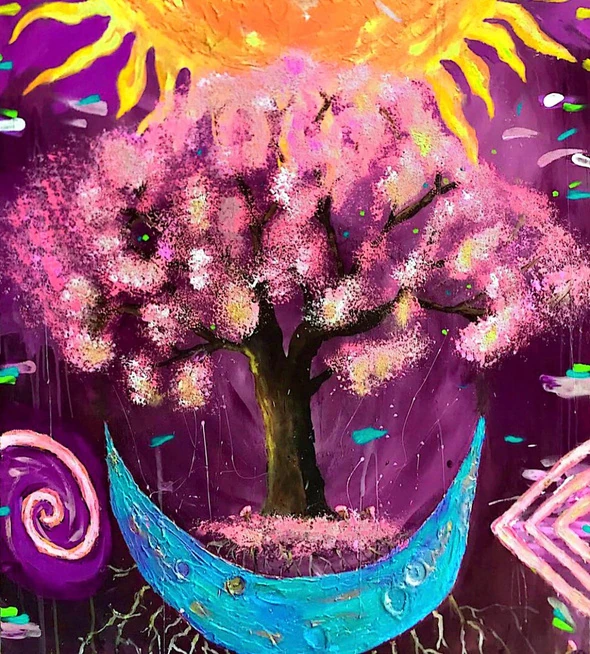
Técnica mixta
Acrílico, óleo y estuco plástico para crear profundidad visual y riqueza material, junto a esculturas moldeadas en arcilla.
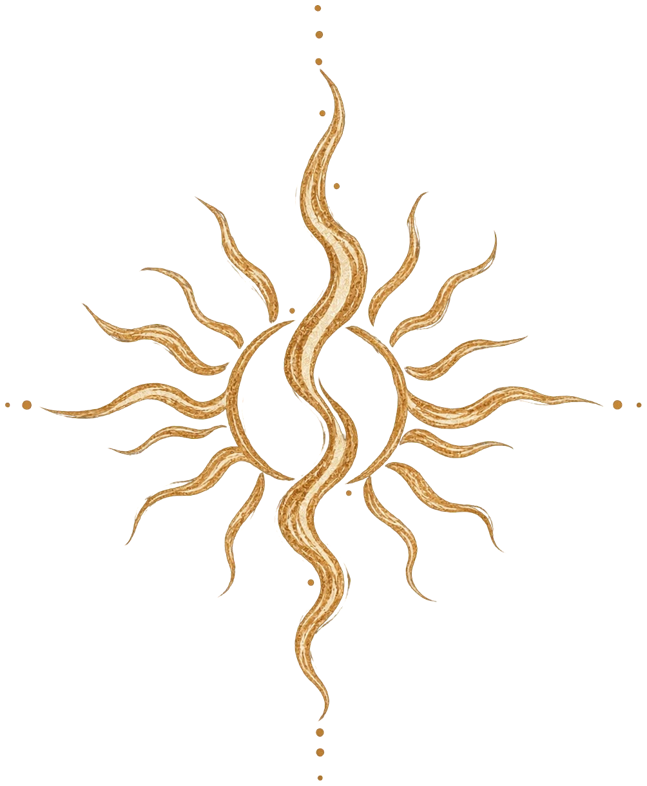
Sami Velásquez EscríbemeAbre cualquier lienzo para conocer su historia.
“Más que observar,
te invito a sentir.”
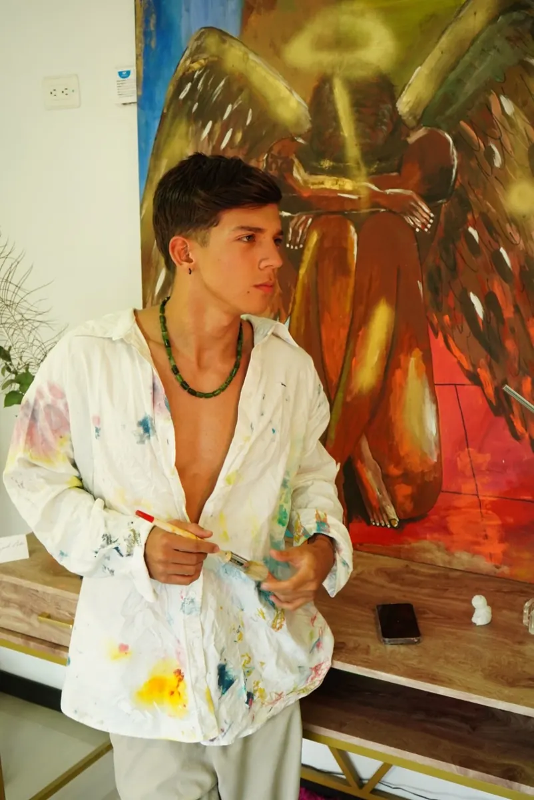
Soy Sami Velásquez, y cada una de mis obras nace desde una conexión profunda con el alma, la emoción y la energía.
Creo en el arte como una herramienta de transformación, capaz de llenar los espacios de luz, significado y propósito.
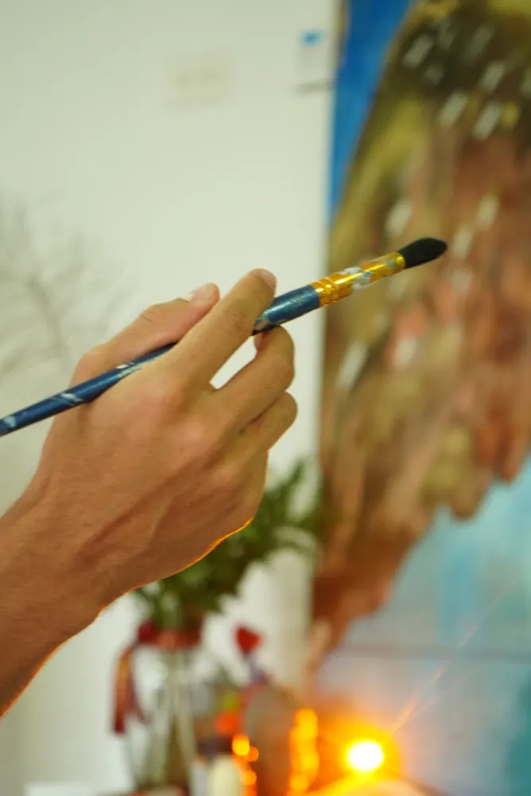
Mis obras se inspiran en la naturaleza, la energía y la espiritualidad que habita en lo cotidiano.
Animales, formas orgánicas y cuerpos celestes se convierten en metáforas de transformación, equilibrio y conexión interior.

Acrílico, óleo y estuco plástico para crear profundidad visual y riqueza material, junto a esculturas moldeadas en arcilla.
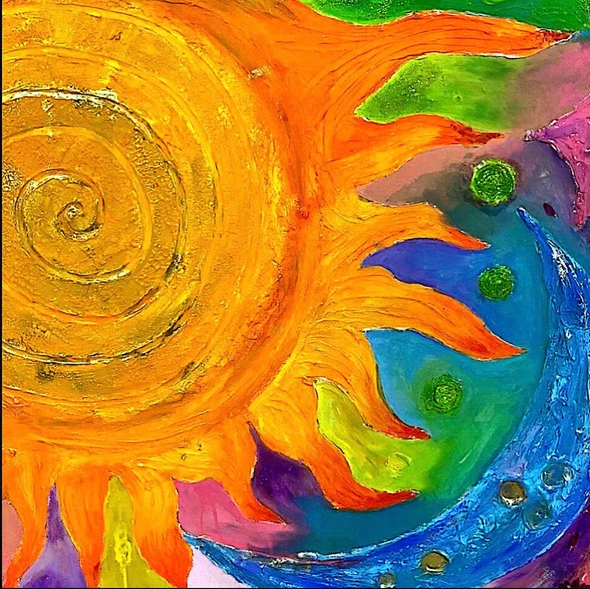
El estuco plástico genera volumen, movimiento y una experiencia sensorial más allá de lo visual.
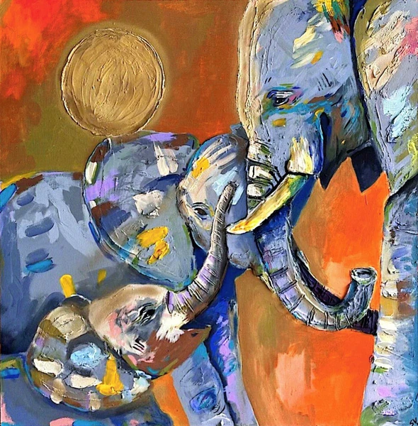
Múltiples capas de pintura dejan que la energía y el proceso se acumulen en el lienzo.
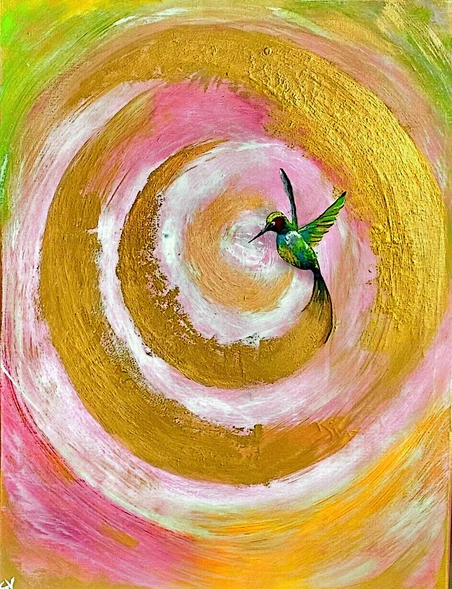
Un proceso ritual carga cada obra con una intención específica, como armonía, abundancia o paz.
Desde mis primeras creaciones en la infancia, el arte ha sido mi forma natural de expresión. Con el tiempo, mi práctica trascendió lo estético para convertirse en un canal de exploración interior y propósito.
He comercializado varias obras de gran formato, permitiendo que mi arte habite y transforme ambientes desde la intención.
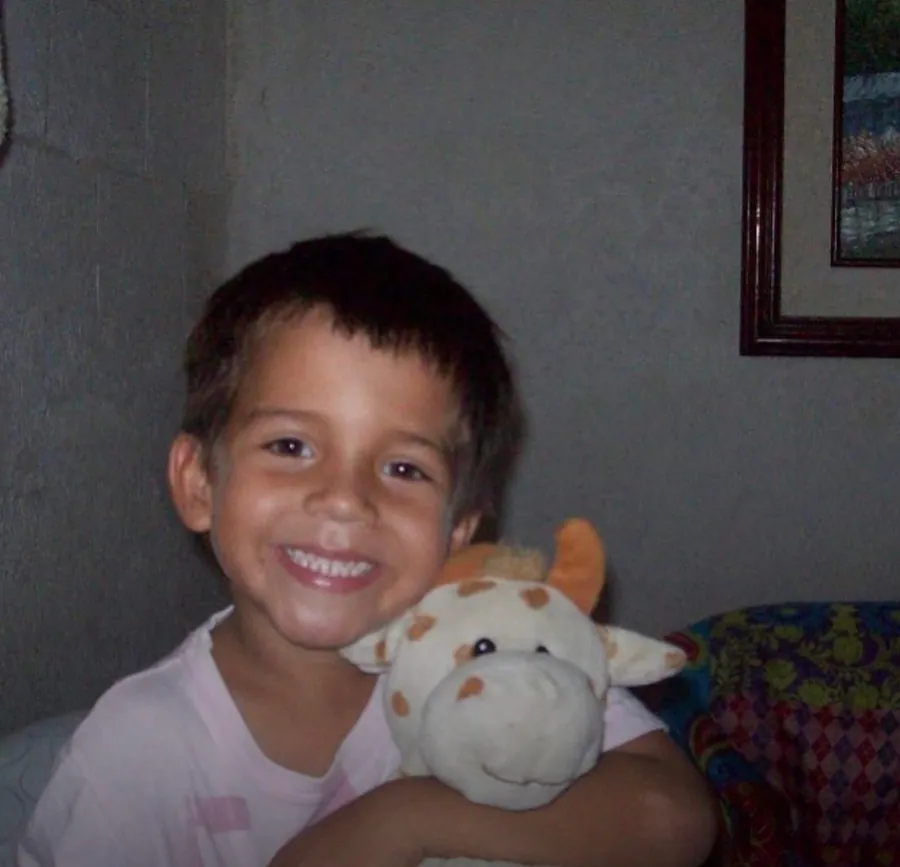
Cada obra es acompañada por un proceso de intención consciente que la armoniza y la carga, convirtiéndola en un canal de energía, equilibrio y significado.
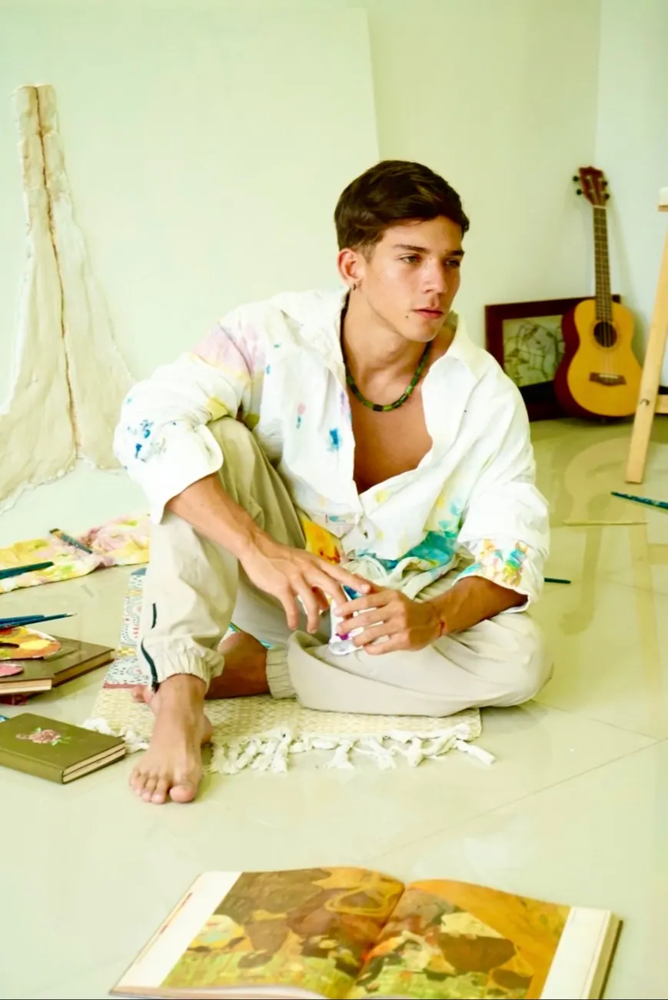
Cada obra puede nacer desde un propósito específico definido junto al cliente.
Una pieza con significado, que trasciende lo estético para convertirse en un medio de expresión emocional y espiritual.
Propósitos como armonía, abundancia, paz, claridad y expansión, según la energía que desees manifestar en el espacio.
Belleza, y también equilibrio, conexión y bienestar para quienes la experimentan.
Trabajar conmigo es crear una obra que no solo habite tu espacio, sino que conecte con tu energía y lo que deseas para tu vida.
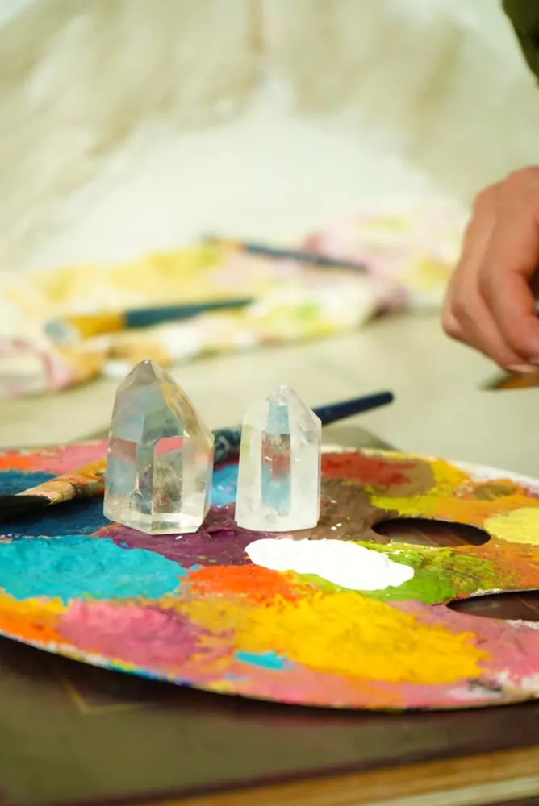
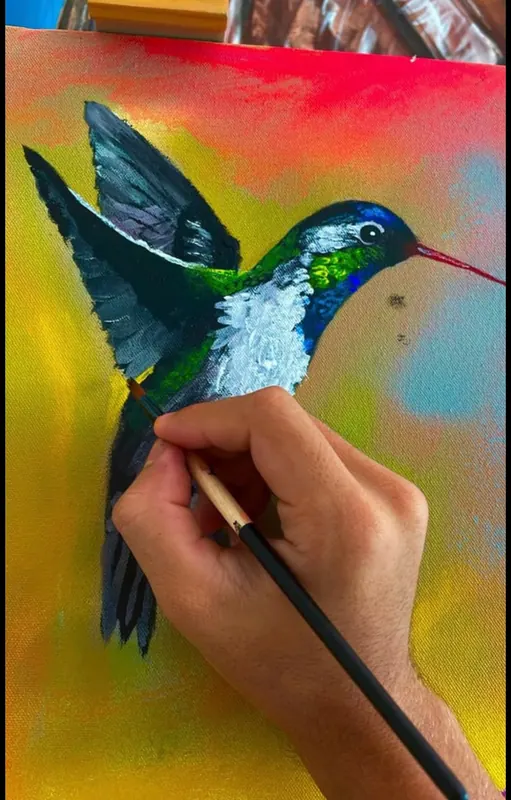
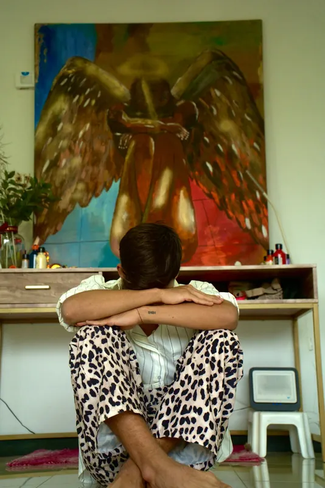
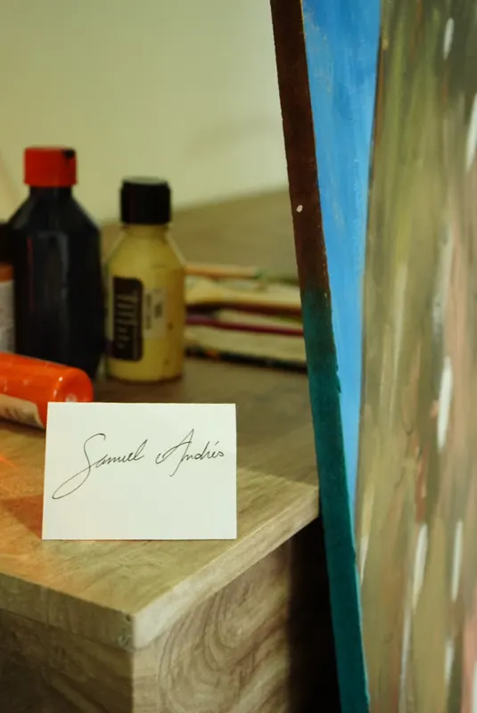
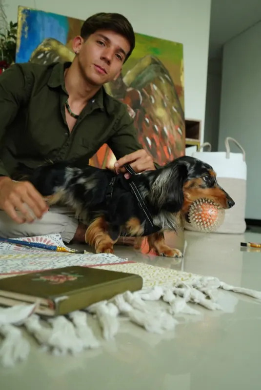
Que cada obra sea un recordatorio de la luz, la intención y la energía que habita en todo.
Escríbeme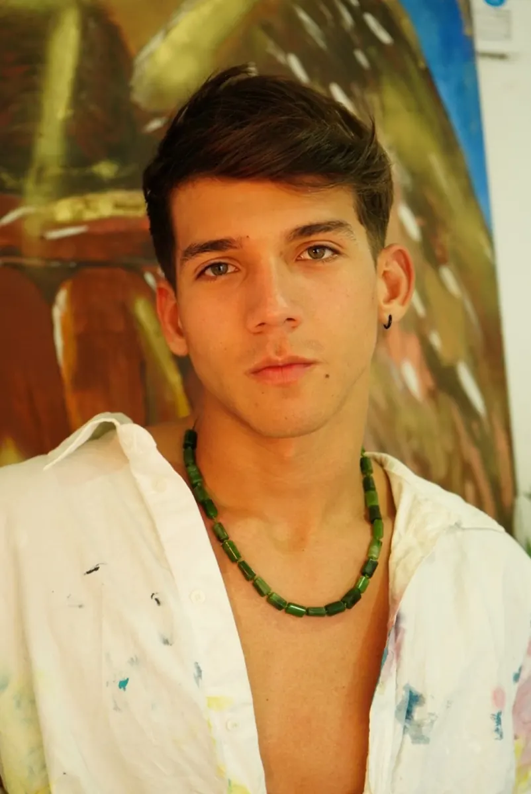